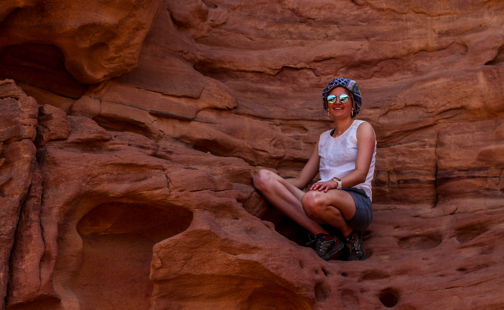
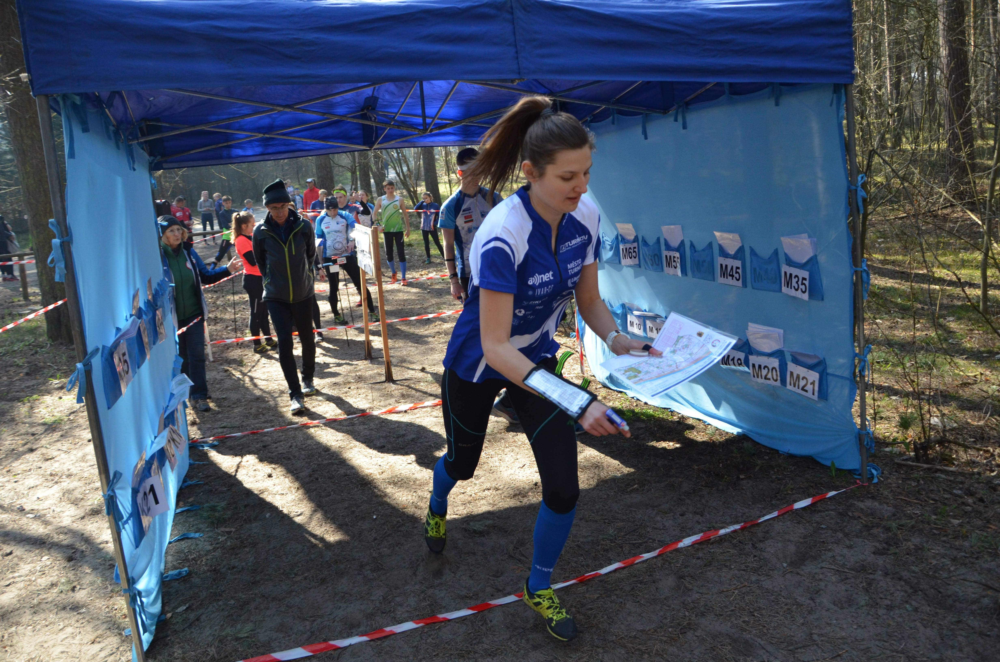

Jsem Martyna, pocházím z města uprostřed Polska, 150 km od Poznaně, kde jsem pak studovala. Vždycky jsem ráda cestovala a věděla, že chci v budoucnu bydlet v zahraničí a poznávat cizí kultury. Že to bude zrovna Česka Republika by mě ale nikdy nenapadlo.
Samozřejmostí pro mě bylo, že během studii pojedu na Erasmus. Ve Slovinsku jsem se poznala s Vítkem z Turnova, a tak po návratu jsem se hned přihlásila na Erasmus v Praze. Poslední semestr jsem dodělala na ČVUT, kde jsem se naučila česky a po půl roce jsem i dostala praci s češtinou. Nyni už 4 roky bydlím v Turnově.
Studovala jsem “Aplikace Internetu Věci”, kde jsem se naučila základy programování, síťování a online marketingu. Zjistila jsem že IT mě hodně baví, a chtěla jsem pracovat jako IT Project Manager. Hned po škole jsem začala pracovat v IT Help Desku s češtinou, a po 8 měsících jsem se rozhodla odstěhovat do Česka. Jako cizinka jsem moc nevěděla kde hledat práci a tak jsem zkusila největšího zaměstnavatele na trhu (ŠKODA - IT oddělení). Po roce práce v Mladé Boleslavi jsem zjistila, že mě korporát nebaví a zkusila jsem Start-up. Už 3 roky pracuji jako IT project manager, a prace v malé IT firmě mě hodně bavi.
Čas po práci trávím spoustou koníčků, hlavně sportováním a učením se nových věci. Nejvíc mě baví zkoušet něco nového. Ze všech z mnoha sportů, které jsem začala dělat mi nejdéle vydrželo běhání s mapou po lese a lezení. Kromě toho ráda cestuji, nyní nejčastěji dodávkou s naší vlčicí.
Před 2 roky adoptovala jsem fenku československeho vlčaka a od te doby je to můj největši koniček. Radé travime čas v přirodě nebo cestovaním.